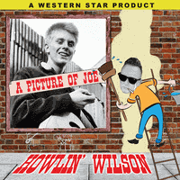

Howlin' Wilson - A Picture Of Joe (EP, 2018)
01 - It Only Took A Minute (1:54)
02 - A Picture Of You (2:19)
03 - That's What Love Will Do (2:25)
04 - The Switch (2:03)
© Western Star Recording Company :: [WSRCEP19]
Notes
United Kingdom.
Tribute release to Joe Brown (and his the Bruvvers)
Song "It Only Took A Minute" is written-by Mort Garson / Hal David
Song "A Picture Of You" is written-by Peter Oakman / Johnny Beveridge
Song "That's What Love Will Do" is written-by Trevor Peacock
Song "The Switch" is written-by Joe Brown
Alan Wilson - Vocals, Guitars, Electric bass (on songs 03, 04), Tambourine
Mark Palmer - Upright bass (on songs 01, 02)
Ben Turner - Drums
Paul Swift, Janet Turner, Trev Cummings, David Barge - Backing vocals (on song 03)
Jo Coomes, Rachel Middleton, John Barnard, Jennifer Garner - Backing vocals (on songs 01, 02)
Sean McBride - Saxophone (on track 04)
Engineered and produced by Alan Wilson
reference information: Discogs®
Review
350/366 (Project 366)
Great tribute by talented musician to a marvelous artist. I think that Joe Brown (and the Bruvvers) recordings sounded much more authentic (logical) and with a special vibe, but these covers are so stunning and with so beauteous vibe. I also really love Alan Wilson's vocals. But the arrangements, musical accompaniment were done very decently and with sufficient diligence.
"It Only Took A Minute" song only took less than a minute to love this tune and adore with the lyrics. Fine and classy backing vocals, sweet tone, great composition. In addition to more general Rock'n'Roll look, "A Picture Of You" bring in whirl of Country Folk music with rockin' and rollin' Pop. Both first tracks with one inspiring mood and love theme. Very nice backing voices and they way of skaldic singing is the best. "That's What Love Will Do" is slightly rural (in the sense of true) and kind of Pop Rock with fifties / sixties flavor. Given the theme of the release and the dating of the original performances, it should be described as early sixties. But there is much more here. And this is an remarkable approach by the performers. The last song is an instrumental "The Switch". Very tuny one, with general style of instrumental Rock'n'Roll, with sax, with a special UK way and even with more tangible Surf mood. Actually, if the three previous tracks were adorable and charming, then this is an excellent bonus and completely wonderful end of the EP!